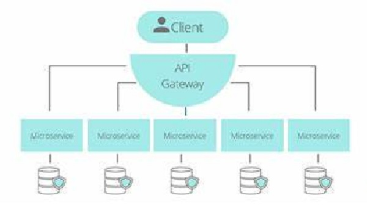

Los microservicios son un enfoque arquitectónico nativo de la nube en el que una sola aplicación se compone de muchos componentes o servicios más pequeños acoplados de forma flexible e independiente. Estos servicios tienen su propio lote de tecnología, que incluye la base de datos y el modelo de gestión de datos; se comunican entre sí mediante una combinación de API REST, transmisión de eventos y Message Brokers, y se organizan por capacidad de negocio, donde la línea que separa los servicios a menudo se denomina un contexto limitado.

Beneficios
Agilidad: Fomentan una organización de equipos pequeños e independientes que se apropian de los servicios. Los equipos actúan en un contexto pequeño y bien comprendido, y están facultados para trabajar de forma más independiente y rápida.
Escalado flexible: Permiten que cada servicio se escale de forma independiente para satisfacer la demanda de la característica de la aplicación que respalda.
Implementación sencilla: Permiten la integración y la entrega continuas, lo que facilita probar nuevas ideas y revertirlas si algo no funciona. El bajo costo de los errores permite experimentar, facilita la actualización del código y acelera el tiempo de comercialización de las nuevas características.
Libertad tecnológica: Las arquitecturas no siguen un enfoque de "diseño único". Los equipos tienen la libertad de elegir la mejor herramienta para resolver sus problemas específicos.
Código reutilizable: La división del software en módulos pequeños y bien definidos les permite a los equipos usar funciones para diferentes propósitos. Un servicio escrito para una determinada función se puede usar como un componente básico para otra característica.
Resistencia: La independencia del servicio aumenta la resistencia de una aplicación a los errores. En una arquitectura monolítica, un error en un solo componente puede provocar un error en toda la aplicación. Con los microservicios, si hay un error en todo el servicio, las aplicaciones lo manejan degradando la funcionalidad sin bloquear toda la aplicación.
A continuación, se muesrta una explicación más extendida sobre el tema.